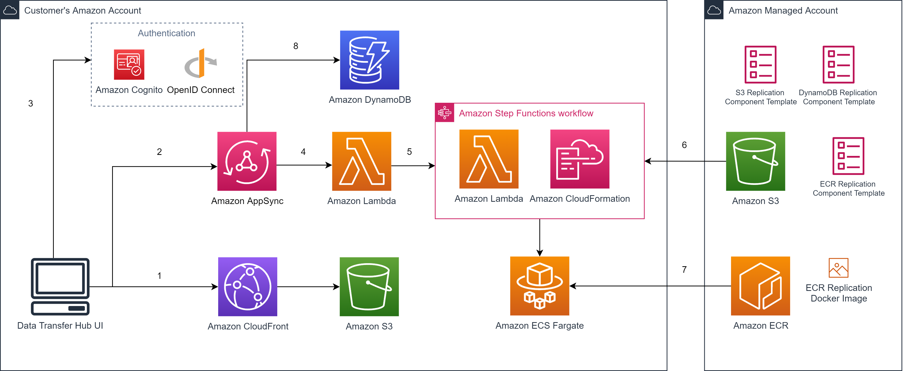

| :- | :- |
|---|---|
| 类型 | Solution |
| 状态 | 正式发布 |
| 一键部署 | 官网 (中国) |
| 代码开源 | GitHub Repo |
行业通用，典型行业包括：
客户在使用对象存储服务或者容器镜像服务时，需要复制、迁移对象或容器镜像，通常有两大类需求：
对于后者，面临的主要问题是中国区域和全球区域的网络隔离，导致 Amazon S3 和 Amazon ECR 在两个区域之间的数据传输受阻。
该方案适用于各行业的客户，特别是有大量数据复制、迁移需求的客户。
客户期望能有开箱即用的工具，直接完成对象或容器镜像的复制、迁移，并且保证性能、数据的安全与完整性。典型的场景是数据迁移、友商数据迁移、业务出海、数据合规、数据灾备等。
具体需求包括：
该方案可以快速、全面地满足客户复制、迁移大量对象或容器镜像的需求。
客户只需要在部署时指定需要复制或迁移的源、目标等信息，就可以在几分钟内开始数据的复制或迁移。
基于亚马逊云科技的安全最佳实践，支持并发和多节点同时传输，自动开启网络加速，有完整的错误处理与验证机制，支持断点续传，同时提供仪表板，客户可以随时监控任务的进展。
该方案实现安全、可靠、可扩展和可追踪的对象数据传输功能，为客户提供一致的用户体验，使其可以轻松地创建和管理传输任务，将不同类型的数据从不同来源复制、迁移到亚马逊云科技的云原生服务。
主要功能包括：
支持将数据从其他云服务商的对象存储服务 (包括阿里云 OSS、腾讯 COS、七牛 Kodo 和其他兼容 Amazon S3 的云存储服务) 复制到 Amazon S3；支持在亚马逊云科技全球区域和中国区域之间复制 Amazon S3 对象。
支持在亚马逊云科技全球区域和中国区域之间复制 Amazon ECR 容器镜像，支持将容器镜像从公共容器镜像仓库 (如Docker Hub、Google gcr.io、Red Hat Quay.io等) 复制到 Amazon ECR。
该方案支持一键部署，采用无服务器架构，提供友好的用户界面，支持多种来源的数据复制或迁移任务。
拥有前端界面，便于客户上手操作。
采用 Amazon Graviton2 作为工作集群，大大降低云上费用。
运用 BBR 加速，提升10倍传输性能；采用集群架构，实现海量数据极速传输。
客户需要拥有亚马逊云科技的中国区域账号或者全球区域账号，无其他部署前提条件。客户即使没有任何基础，也能快速搭建出演示或 POC 系统进行展示和验证。
对客户没有资源或能力方面的要求。该方案提供前端界面，所以客户不需要有任何编程基础，只需要点击鼠标操作即可。
应用成本主要与传输的数据总量，以及对象 (文件) 的平均大小有关。例如，从 us-west-2 区 S3 传输 100TB 的对象到宁夏区 S3，平均文件大小是 50MB，那么排除流量和 S3 存储费用外，成本大概为 29 美元。
该方案提供源代码和Amazon CloudFormation模板。客户可以参考部署手册，运行Amazon CloudFormation模板一键部署。客户可以自行修改源代码来满足特定的需求。如需要咨询技术问题，请在GitHub上提交issue，或通过内部系统联系该方案的项目负责人。

可提供支持的合作伙伴：
新版本主要包括以下功能改进与优化。有关更多内容，请参考更新说明。
新版本主要包括以下功能改进与优化：
新版本主要包括以下功能改进与优化：
新版本支持通过专线进行数据传输。对于已经在特定海外区域和特定中国区域均开启了Direct Connect服务，并已经采购了有资质的运营商提供的合规跨境专线连接该海外区域和该中国区域自用VPC的客户，现在可以自主通过本方案的控制台创建S3数据传输任务，并自主选择使用专线进行传输。该新功能适用于对于安全性等事项有更高要求的客户。
新版本主要包括以下功能改进与优化：